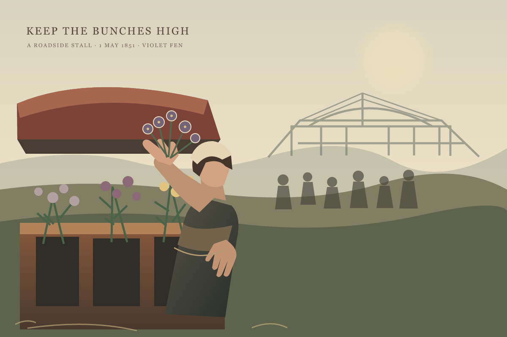
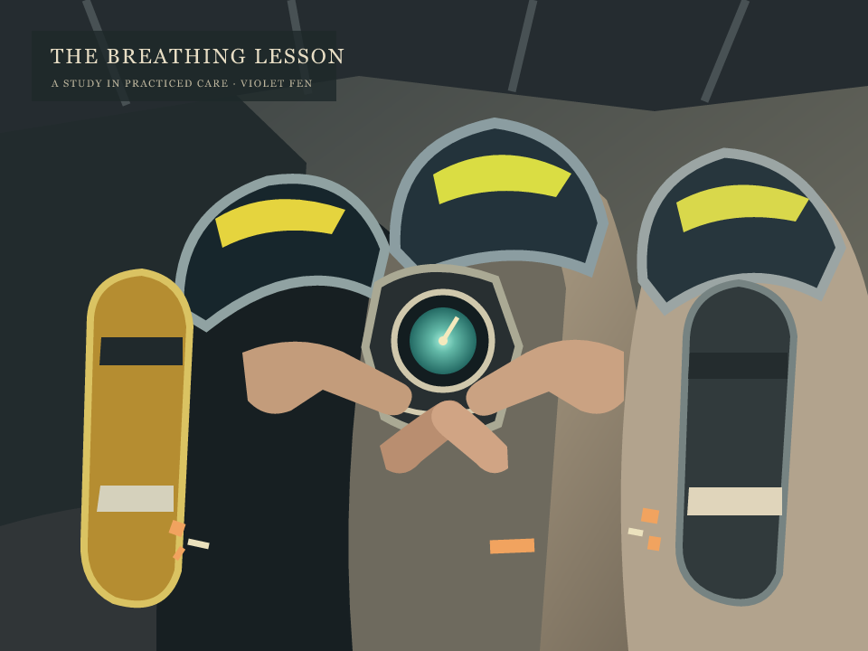

<!doctype html>
<html lang="en">
<meta charset="utf-8">
<meta name="viewport" content="width=device-width, initial-scale=1">
<title>Violet Fen — Paintings</title>
<style>
 body{margin:0;background:#262922;color:#eee5d2;font:16px Georgia,serif}main{max-width:1200px;margin:0 auto;padding:32px 20px}h1{font-weight:400;letter-spacing:.08em;font-size:1.35rem}h2{font-weight:400;font-size:1.05rem;letter-spacing:.06em}p{color:#c6b99e;margin:8px 0 22px}figure{margin:36px 0 60px}img{display:block;width:100%;height:auto}
</style>
<main><h1>VIOLET FEN</h1>
<figure><h2>THE VIOLET LEDGER · KEEP THE BUNCHES HIGH</h2><p>Roadside stall, 1 May 1851</p></figure>
<figure><h2>THE BREATHING LESSON</h2><p>A study in practiced care</p></figure>
</main>
</html>
